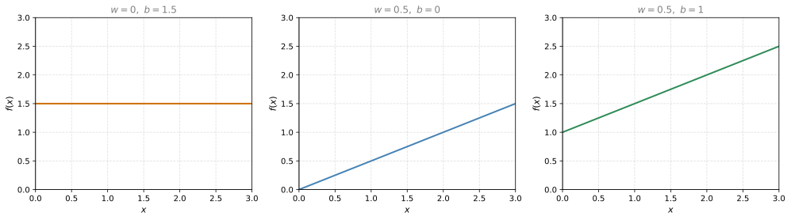
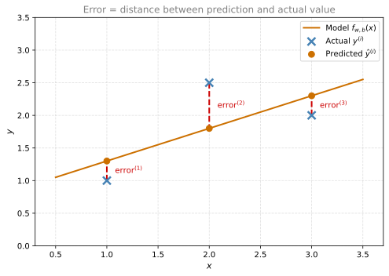
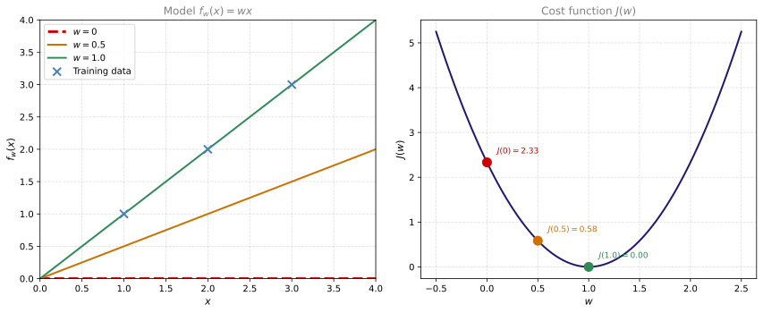
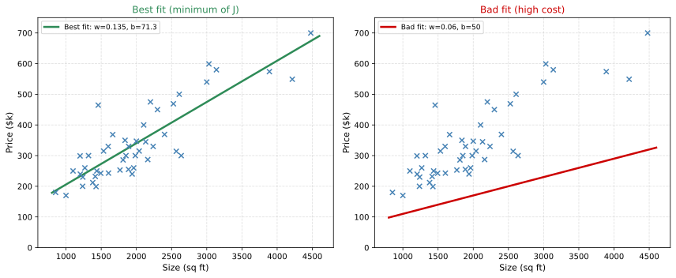
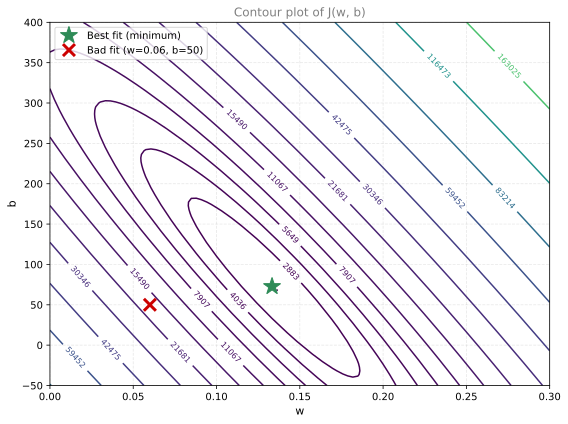
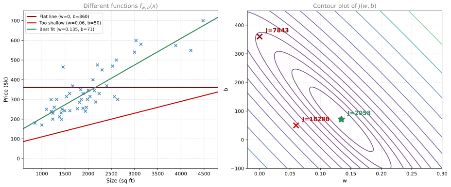
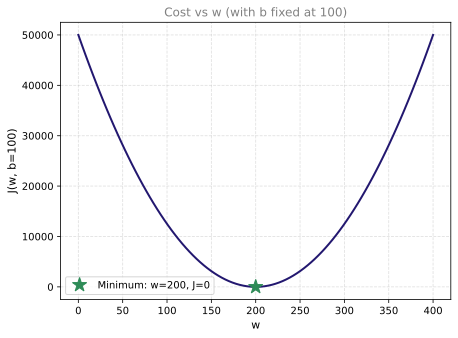
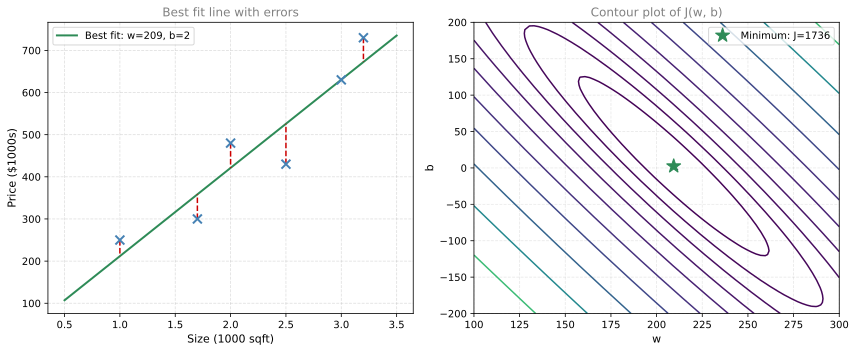

Cost Function
machine-learning
supervised-learning
regression
Cost Function. Machine learning notes on h.oliabak.com.
How Parameters Shape the Model
Recall the linear regression model:
\[ f_{w,b}(x) = wx + b \]
The variables \(w\) and \(b\) are called the parameters of the model (also referred to as coefficients or weights). They are the variables you adjust during training to improve the model. Different values of \(w\) and \(b\) produce different lines.
Let us walk through each case:
\(w = 0\), \(b = 1.5\): The function is \(f(x) = 1.5\), a horizontal line. The prediction is always 1.5 regardless of \(x\). The value \(b\) is the y-intercept (where the line crosses the vertical axis).
\(w = 0.5\), \(b = 0\): The function is \(f(x) = 0.5x\). When \(x = 0\), \(f = 0\). When \(x = 2\), \(f = 1\). The value \(w\) gives the slope of the line (rise over run = 0.5).
\(w = 0.5\), \(b = 1\): The function is \(f(x) = 0.5x + 1\). Now the line starts at \(b = 1\) on the vertical axis and rises with slope 0.5. When \(x = 2\), \(f = 2\).
The goal of linear regression is to find values of \(w\) and \(b\) so that the line passes through or close to the training examples.
Review Questions
1. If \(w = 0\) and \(b = 3\), what does the model predict for every input \(x\)?
TipAnswer
The model always predicts 3, regardless of \(x\). With \(w = 0\), the formula becomes \(f(x) = 0 \cdot x + 3 = 3\), a horizontal line at height 3.
1. What does the parameter \(w\) control, and what does \(b\) control?
TipAnswer
\(w\) controls the slope of the line (how steeply it rises or falls as \(x\) increases). \(b\) controls the y-intercept (where the line crosses the vertical axis when \(x = 0\)).
Building the Cost Function
The key question in linear regression is: how do you find values of \(w\) and \(b\) so that the predictions \(\hat{y}^{(i)}\) are close to the true targets \(y^{(i)}\) for all training examples?
To answer this, we need a way to measure how well the model fits the data. That measurement is called the cost function.
Step 1: Compute the Error
For a single training example \((x^{(i)}, y^{(i)})\), the model makes a prediction:
\[ \hat{y}^{(i)} = f_{w,b}(x^{(i)}) = wx^{(i)} + b \]
The error is the difference between the prediction and the actual value:
\[ \text{error}^{(i)} = \hat{y}^{(i)} - y^{(i)} \]
This tells us how far off the prediction is from the target. Visually, the error is the vertical distance between the predicted point on the line and the actual data point:

Each red dashed line shows the error for one training example. If the prediction is above the actual value, the error is positive. If it is below, the error is negative.
Step 2: Square the Error
We square the error so that positive and negative errors do not cancel each other out:
\[ \left(\hat{y}^{(i)} - y^{(i)}\right)^2 \]
Step 3: Sum Over All Training Examples
We want to measure the error across the entire training set, so we sum the squared errors for all \(m\) examples:
\[ \sum_{i=1}^{m} \left(\hat{y}^{(i)} - y^{(i)}\right)^2 \]
Step 4: Average the Errors
If we just sum, then datasets with more examples will always produce bigger numbers. To make the cost comparable regardless of dataset size, we divide by \(m\):
\[ \frac{1}{m} \sum_{i=1}^{m} \left(\hat{y}^{(i)} - y^{(i)}\right)^2 \]
Step 5: The Convention of Dividing by 2
By convention in machine learning, we divide by \(2m\) instead of \(m\). The extra factor of 2 makes the math cleaner when we take derivatives to find the minimum. It cancels with the exponent of 2 from the square, simplifying the gradient descent update rules we will see later. The cost function still works the same way whether you include this factor or not.
Squared Error Cost Function
Putting it all together, here is what we built step by step:
- We compute the error for each example: \(\hat{y}^{(i)} - y^{(i)}\)
- We square each error: \((\hat{y}^{(i)} - y^{(i)})^2\)
- We sum the squared errors across all \(m\) examples: \(\sum_{i=1}^{m}(\hat{y}^{(i)} - y^{(i)})^2\)
- We divide by \(m\) to get the average: \(\frac{1}{m}\sum_{i=1}^{m}(\hat{y}^{(i)} - y^{(i)})^2\)
- We divide by an extra 2 (convention): \(\frac{1}{2m}\sum_{i=1}^{m}(\hat{y}^{(i)} - y^{(i)})^2\)
Since \(\hat{y}^{(i)} = f_{w,b}(x^{(i)})\), we can write this as:
\[ J(w, b) = \frac{1}{2m} \sum_{i=1}^{m} \left(f_{w,b}(x^{(i)}) - y^{(i)}\right)^2 \]
This is the squared error cost function (also called mean squared error). It is by far the most commonly used cost function for linear regression and for regression problems in general.
- When \(J(w, b)\) is small, the model fits the data well (predictions are close to the targets).
- When \(J(w, b)\) is large, the model fits poorly (predictions are far from the targets).
The goal of training is to find values of \(w\) and \(b\) that minimize \(J(w, b)\):
\[ \underset{w,b}{\text{minimize}} \ J(w, b) \]
Note
Why minimize over \(w\) and \(b\), but not \(x\)? Because \(x\) values are the input data, given to us and fixed. We cannot change the house sizes in our dataset. The only things we can adjust are the model’s parameters \(w\) (slope) and \(b\) (intercept).
Why use vertical distance, not the shortest distance to the line? In regression, our job is to predict \(y\) given a known \(x\). The error measures how wrong the \(y\)-prediction is for a fixed \(x\) value. That is why we measure the vertical gap (difference in \(y\)) rather than the perpendicular (shortest) distance to the line. We treat \(x\) as exact and only \(y\) as the thing we are trying to get right.
If we measured the perpendicular distance instead, we would be doing something called orthogonal regression (or Total Least Squares). That approach treats both \(x\) and \(y\) as uncertain, and finds the line that minimizes the shortest distance from each point to the line. It is useful in some scientific applications where both measurements have noise, but in standard machine learning, we assume \(x\) is known exactly and only \(y\) is what we need to predict. That is why ordinary linear regression uses vertical distances.
Review Questions
1. Why do we square the errors instead of just summing the raw errors \((\hat{y}^{(i)} - y^{(i)})\)?
TipAnswer
If we summed raw errors, positive errors (overestimates) and negative errors (underestimates) would cancel each other out. A model that is wildly wrong in both directions could appear to have zero total error. Squaring ensures all errors contribute positively, and also penalizes larger errors more heavily.
1. Why do we divide by \(m\) (the number of training examples)?
TipAnswer
Without dividing by \(m\), the cost would automatically grow as the training set gets larger (simply because we are summing over more examples). Dividing by \(m\) gives us the average squared error, which is comparable across datasets of different sizes.
1. What does it mean when \(J(w, b)\) is close to zero?
TipAnswer
It means the model’s predictions \(\hat{y}^{(i)}\) are very close to the actual target values \(y^{(i)}\) across the training set. The model fits the data well.
1. Why is there an extra division by 2 in the cost function?
TipAnswer
It is purely a mathematical convenience. When we later take the derivative of \(J\) (to find the minimum), the 2 from the exponent cancels with the 2 in the denominator, making the gradient formula cleaner. It does not change which values of \(w\) and \(b\) minimize the cost.
1. Given the cost function below, which of these are the parameters of the model that can be adjusted?
\[ J(w, b) = \frac{1}{2m}\sum_{i=1}^{m}(f_{w,b}(x^{(i)}) - y^{(i)})^2 \]
- \(w\) and \(b\)
- \(f_{w,b}(x^{(i)})\)
- \(w\) only, because we should choose \(b = 0\)
- \(\hat{y}\)
TipAnswer
a. \(w\) and \(b\) are the parameters of the model, adjusted as the model learns from the data. They are also referred to as “coefficients” or “weights.”
Cost Function Intuition
To build intuition, let us use a simplified model where \(b = 0\), so the function is just:
\[ f_w(x) = wx \]
This means the line always passes through the origin. With only one parameter \(w\), the cost function becomes:
\[ J(w) = \frac{1}{2m} \sum_{i=1}^{m} (wx^{(i)} - y^{(i)})^2 \]
We will use a tiny training set with three points: \((1, 1)\), \((2, 2)\), \((3, 3)\).
Trying Different Values of \(w\)
For each value of \(w\), we get a different line \(f_w(x) = wx\) and a different cost \(J(w)\).

Let us walk through each case:
When \(w = 1\): The line \(f(x) = x\) passes exactly through all three training points. The error for every example is zero:
\[ J(1) = \frac{1}{6}\left[(1 \cdot 1 - 1)^2 + (1 \cdot 2 - 2)^2 + (1 \cdot 3 - 3)^2\right] = \frac{0 + 0 + 0}{6} = 0 \]
When \(w = 0.5\): The line \(f(x) = 0.5x\) undershoots every point. The errors are visible as the vertical gaps between the line and the data points:
\[ J(0.5) = \frac{1}{6}\left[(0.5 - 1)^2 + (1 - 2)^2 + (1.5 - 3)^2\right] = \frac{0.25 + 1 + 2.25}{6} = \frac{3.5}{6} \approx 0.58 \]
When \(w = 0\): The line is flat along the x-axis. Every prediction is 0, so the errors are large:
\[ J(0) = \frac{1}{6}\left[(0 - 1)^2 + (0 - 2)^2 + (0 - 3)^2\right] = \frac{1 + 4 + 9}{6} = \frac{14}{6} \approx 2.33 \]
Key Insight
Each value of \(w\) produces a different line (left plot) and corresponds to a single point on the cost curve (right plot). The cost function \(J(w)\) forms a bowl shape (parabola). The bottom of the bowl is where \(J\) is smallest, which corresponds to the best-fitting line.
Try It Yourself (Simplified: \(b = 0\))
Use the slider to adjust \(w\) (with \(b\) fixed at 0). The left plot shows the model line, and the right plot traces out the cost curve \(J(w)\) with your current position marked.
As you slide \(w\), notice how the red dot moves along the parabola. At \(w = 1\), the cost is zero (perfect fit). Moving \(w\) away from 1 in either direction increases the cost.
To also explore the effect of \(b\), use the full version below with both sliders:
Try It Yourself (Full: \(w\) and \(b\))
Try to find values of \(w\) and \(b\) that make \(J\) as close to zero as possible. You should find that \(w = 1\) and \(b = 0\) gives a perfect fit (\(J = 0\)) for this dataset.
For this example, the minimum is at \(w = 1\), where \(J(1) = 0\) (a perfect fit). The goal of linear regression is to find the value of \(w\) (and \(b\) in the full model) that sits at the bottom of this bowl.
In the full model with both \(w\) and \(b\), the cost function \(J(w, b)\) forms a 3D surface (a bowl in three dimensions), and the goal is to find the point at the bottom of that 3D bowl. Finding the minimum of a function is an optimization problem, and the algorithm we will use to solve it is called gradient descent.
Review Questions
1. In the simplified model with \(b = 0\), why does \(w = 1\) give \(J(w) = 0\) for the training set \((1,1), (2,2), (3,3)\)?
TipAnswer
Because \(f(x) = 1 \cdot x = x\), which means the prediction exactly equals the target for every training example. All errors are zero, so the sum of squared errors is zero.
1. If the cost function \(J(w)\) has a bowl shape, where should you look for the best value of \(w\)?
TipAnswer
At the bottom of the bowl, where \(J(w)\) is at its minimum. That value of \(w\) produces the line that best fits the training data (smallest total squared error).
1. Why does a negative value of \(w\) (like \(w = -0.5\)) produce a very high cost for this dataset?
TipAnswer
Because the training data has a positive relationship (as \(x\) increases, \(y\) increases), but a negative \(w\) makes the line slope downward. The predictions go in the wrong direction, creating very large errors for every point.
1. When does the model fit the data relatively well, compared to other choices for parameter \(w\)?
- When \(f_w(x)\) is at or near a minimum for all values of \(x\) in the training set
- When \(w\) is close to zero
- When the cost \(J\) is at or near a minimum
- When \(x\) is at or near a minimum
TipAnswer
c. When the cost \(J\) is relatively small (closer to zero), it means the model fits the data better compared to other choices for \(w\) and \(b\).
Visualizing \(J(w, b)\) in 3D
When we had only one parameter \(w\) (with \(b = 0\)), the cost function was a 2D curve shaped like a bowl (parabola). Now with two parameters \(w\) and \(b\), the cost function \(J(w, b)\) becomes a 3D surface, still shaped like a bowl, but in three dimensions.
Note
Why is this 3D? It is tempting to think “3D means two input features,” but that is not what is happening here. We still have only one input feature (house size). The 3D surface is plotting the cost function \(J\) as a function of the two parameters \(w\) and \(b\) (not the input features). The axes are \(w\), \(b\), and \(J(w,b)\).
The model plot (data + line) is always 2D for one-feature regression: \(x\) vs \(y\). The cost surface is 3D because we have two knobs to tune (\(w\) and \(b\)). If we added a second feature like bedrooms, we would have three parameters (\(w_1\), \(w_2\), \(b\)), and the cost surface would be 4D, which we cannot visualize at all.
Using our 47-house housing prices dataset, here is what the cost function surface looks like as you vary \(w\) and \(b\). You can click and drag to rotate the view:

The left plot shows the line at the bottom of the bowl (minimum cost, best fit). The right plot shows a line far from the minimum (\(w = 0.06\), \(b = 50\)), which consistently underestimates prices. Below is the 3D cost surface where you can explore how \(J\) changes as you move across different \((w, b)\) combinations:
Every point on this surface represents a specific choice of \(w\) and \(b\). The height of the surface at that point is the cost \(J(w, b)\). The bottom of the bowl is where the cost is smallest, and that is the best fit for our data.
Notice the bowl is stretched and asymmetric, unlike the clean symmetric bowl from the simplified 3-point example. This is normal for real-world datasets with many noisy data points. The shape depends on the spread of your data: the cost is more sensitive to small changes in \(w\) (which controls slope over a wide range of \(x\) values) than to changes in \(b\).
Contour Plots
A contour plot is a way to visualize the same 3D bowl in 2D. It works like a topographical map: imagine looking straight down at the bowl from above. Each oval (ellipse) connects all the points that have the same cost value.

Think of it this way: if you took the 3D bowl and sliced it horizontally at different heights, each slice would produce one of these ellipses. Points on the same ellipse have the same cost. The center of the smallest ellipse is the minimum of \(J\), which represents the best values of \(w\) and \(b\) for fitting the training data.
The contour plot is a convenient way to visualize the 3D cost function in just 2D. Each point on the contour plot represents a specific choice of \((w, b)\), which defines a function \(f_{w,b}(x) = wx + b\), a line on the data plot. Points near the center produce better-fitting functions, while points on the outer ellipses produce functions that fit the data poorly.
Notice that the red X (bad fit) and green star (best fit) on the contour plot correspond directly to the red and green functions in the 2D plots above. Multiple points on the same ellipse define different functions (different lines), yet all have the same cost. The key insight is that only the function defined by the point at the center of the concentric ellipses gives the best fit to the data.
Review Questions
1. What does the 3D surface plot of \(J(w, b)\) look like, and what does the bottom of the bowl represent?
TipAnswer
It looks like a bowl (or hammock). The bottom of the bowl is the point where the cost \(J\) is at its minimum. That point gives the values of \(w\) and \(b\) that produce the best-fitting line for the training data.
1. On a contour plot, what do points on the same ellipse have in common?
TipAnswer
They all have the same value of the cost function \(J(w, b)\). Even though they correspond to different values of \(w\) and \(b\) (and therefore different lines), they produce the same total squared error.
1. Where on the contour plot should you look for the best model parameters?
TipAnswer
At the center of the concentric ellipses, where the cost is at its minimum. That is the point that gives the smallest \(J(w, b)\) and therefore the best-fitting line.
Connecting the Plots: From Contour to Model
Let us walk through a few specific examples to see how a point on the contour plot maps to a line on the data.

Each colored marker on the contour plot (right) corresponds to the function of the same color on the data plot (left):
- Dark red (\(w = 0\), \(b = 360\)): A flat line that ignores house size entirely. It sits on an outer ellipse (high cost).
- Red (\(w = 0.06\), \(b = 50\)): A shallow line that consistently underestimates prices. Still far from the minimum.
- Green (best fit): The line that passes closest to all the data points. It sits at the center of the ellipses (minimum cost).
The closer a point is to the center of the contour plot, the better the corresponding function fits the training data. The further away, the higher the cost and the worse the fit.
Review Questions
1. For linear regression, if you find parameters \(w\) and \(b\) so that \(J(w, b)\) is very close to zero, what can you conclude?
- The selected values of \(w\) and \(b\) cause the algorithm to fit the training set really well.
- The selected values of \(w\) and \(b\) cause the algorithm to fit the training set really poorly.
- This is never possible. There must be a bug in the code.
TipAnswer
a. When \(J(w, b)\) is very close to zero, it means the predictions \(\hat{y}^{(i)}\) are very close to the actual targets \(y^{(i)}\) across the training set. The model fits the data well.
What Comes Next
In linear regression, you do not want to manually search the contour plot for the best \(w\) and \(b\). That approach does not scale to more complex models with many parameters. Instead, you need an efficient algorithm that automatically finds the values of \(w\) and \(b\) that minimize \(J(w, b)\).
That algorithm is called gradient descent, and it is one of the most important algorithms in all of machine learning. Gradient descent (and its variations) are used to train not just linear regression, but some of the biggest and most complex AI models in the world. If you have taken the calculus course, you have already seen gradient descent in action. In the next section, we will apply it to linear regression.
Lab: Implementing the Cost Function in Python
In this lab, you will implement the cost function for linear regression and explore how it behaves with different parameter values.
Setup
import numpy as np
import matplotlib.pyplot as pltTraining Data
We use the same simple 2-point dataset from the previous lab:
| Size (1000 sqft) | Price ($1000s) |
|---|---|
| 1.0 | 300 |
| 2.0 | 500 |
x_train = np.array([1.0, 2.0]) # size in 1000 sqft
y_train = np.array([300.0, 500.0]) # price in $1000sImplementing compute_cost
The cost function measures how well the model fits the data. Here is the formula we are implementing:
\[ J(w, b) = \frac{1}{2m} \sum_{i=0}^{m-1} (f_{w,b}(x^{(i)}) - y^{(i)})^2 \]
The code loops over each training example, computes the prediction \(f_{w,b}(x^{(i)}) = wx^{(i)} + b\), calculates the squared difference from the target, and accumulates the total. Finally it divides by \(2m\).
def compute_cost(x, y, w, b):
"""
Computes the cost function for linear regression.
Args:
x (ndarray (m,)): input data (m examples)
y (ndarray (m,)): target values
w, b (scalar): model parameters
Returns:
total_cost (float): the cost J(w, b)
"""
m = x.shape[0] # number of training examples
cost_sum = 0
for i in range(m):
f_wb = w * x[i] + b # prediction for example i
cost = (f_wb - y[i]) ** 2 # squared error
cost_sum = cost_sum + cost # accumulate
total_cost = (1 / (2 * m)) * cost_sum
return total_costLet us break this down line by line:
m = x.shape[0]gets the number of training examples- The
forloop goes through each example \(i\) f_wb = w * x[i] + bcomputes the model’s prediction for input \(x^{(i)}\)cost = (f_wb - y[i]) ** 2computes the squared error for that examplecost_sum = cost_sum + costadds it to the running total- After the loop,
total_cost = (1 / (2 * m)) * cost_sumdivides by \(2m\) to get the average
Note
In lecture, summation indices go from \(i = 1\) to \(m\). In Python, arrays are zero-indexed, so we loop from \(i = 0\) to \(m - 1\). The result is the same.
Testing the Cost Function
From the previous lab, we know that \(w = 200\) and \(b = 100\) give a perfect fit for this dataset. Let us verify:
# Perfect fit
cost = compute_cost(x_train, y_train, 200, 100)
print(f"Cost at w=200, b=100: {cost}")Cost at w=200, b=100: 0.0The cost is 0 because the line passes exactly through both points.
Now let us try some bad parameter choices:
# Various w values with b=100
for w in [0, 100, 200, 300, 400]:
cost = compute_cost(x_train, y_train, w, 100)
print(f" w = {w:3d}, b = 100 -> J = {cost:8.1f}") w = 0, b = 100 -> J = 50000.0
w = 100, b = 100 -> J = 12500.0
w = 200, b = 100 -> J = 0.0
w = 300, b = 100 -> J = 12500.0
w = 400, b = 100 -> J = 50000.0Notice how the cost is zero at \(w = 200\) and increases as \(w\) moves away from that value in either direction.
Visualizing Cost vs \(w\)
Let us plot the cost function for different values of \(w\) (keeping \(b = 100\) fixed):
%config InlineBackend.figure_formats = ['svg']
# Compute cost for a range of w values
w_values = np.linspace(0, 400, 100)
cost_values = [compute_cost(x_train, y_train, w, 100) for w in w_values]
plt.plot(w_values, cost_values, color='#22176F', linewidth=2)
plt.xlabel('w', fontsize=11)
plt.ylabel('J(w, b=100)', fontsize=11)
plt.title('Cost vs w (with b fixed at 100)', fontsize=12, color='gray')
plt.grid(linestyle='--', alpha=0.4)
# Mark the minimum
plt.plot(200, 0, '*', color='#2E8B57', markersize=15, label='Minimum: w=200, J=0')
plt.legend(fontsize=10)
plt.show()
The cost forms a U-shaped curve (parabola) with its minimum at \(w = 200\). This is the value that minimizes cost for this dataset when \(b = 100\).
Larger Dataset
Real data rarely falls perfectly on a line. Let us try a slightly larger dataset where the points do not all lie on a single line:
%config InlineBackend.figure_formats = ['svg']
# A more realistic dataset (6 houses)
x_train2 = np.array([1.0, 1.7, 2.0, 2.5, 3.0, 3.2])
y_train2 = np.array([250, 300, 480, 430, 630, 730])
# Find best fit
w_best, b_best = np.polyfit(x_train2, y_train2, 1)
cost_best = compute_cost(x_train2, y_train2, w_best, b_best)
print(f"Best fit: w = {w_best:.1f}, b = {b_best:.1f}")
print(f"Minimum cost: J = {cost_best:.1f}")
print()
print("Note: the minimum cost is NOT zero because the")
print("data points do not all lie on a single straight line.")Best fit: w = 209.4, b = 2.4
Minimum cost: J = 1735.9
Note: the minimum cost is NOT zero because the
data points do not all lie on a single straight line.%config InlineBackend.figure_formats = ['svg']
x_line = np.linspace(0.5, 3.5, 100)
fig, axes = plt.subplots(1, 2, figsize=(12, 5))
# Left: data + best fit line + error lines
axes[0].scatter(x_train2, y_train2, color='#4682B4', s=80, marker='x', linewidths=2, zorder=5)
axes[0].plot(x_line, w_best * x_line + b_best, color='#2E8B57', linewidth=2, label=f'Best fit: w={w_best:.0f}, b={b_best:.0f}')
# Draw error lines
for i in range(len(x_train2)):
pred = w_best * x_train2[i] + b_best
axes[0].plot([x_train2[i], x_train2[i]], [y_train2[i], pred],
color='#CC0000', linewidth=1.5, linestyle='--')
axes[0].set_xlabel('Size (1000 sqft)', fontsize=11)
axes[0].set_ylabel('Price ($1000s)', fontsize=11)
axes[0].set_title('Best fit line with errors', fontsize=12, color='gray')
axes[0].legend(fontsize=10)
axes[0].grid(linestyle='--', alpha=0.4)
# Right: cost surface as contour
w_range = np.linspace(100, 300, 80)
b_range = np.linspace(-200, 200, 80)
W, B = np.meshgrid(w_range, b_range)
J = np.zeros_like(W)
for i in range(W.shape[0]):
for j in range(W.shape[1]):
J[i, j] = compute_cost(x_train2, y_train2, W[i, j], B[i, j])
levels = np.logspace(np.log10(J.min() + 1), np.log10(J.max()), 12)
axes[1].contour(W, B, J, levels=levels, cmap='viridis')
axes[1].plot(w_best, b_best, '*', color='#2E8B57', markersize=15, label=f'Minimum: J={cost_best:.0f}')
axes[1].set_xlabel('w', fontsize=11)
axes[1].set_ylabel('b', fontsize=11)
axes[1].set_title('Contour plot of J(w, b)', fontsize=12, color='gray')
axes[1].legend(fontsize=10)
axes[1].grid(linestyle='--', alpha=0.3)
plt.tight_layout()
plt.show()
With this dataset, the minimum cost is not zero because no single straight line can pass through all the points perfectly. The best we can do is find the line that minimizes the total squared error. The dashed red lines show the error for each point, and the contour plot shows where the minimum sits.
Convex Cost Surface
An important property of the squared error cost function is that it is convex, meaning it always has a single global minimum (no local minima to get stuck in). The surface always looks like a bowl. This guarantees that if we find the bottom, we have found the best possible solution. This property is what makes gradient descent work reliably for linear regression.
Summary
In this lab you learned:
- The cost function computes a single number that measures how well your model fits the training data
- Implementing it in Python involves a loop over all training examples, computing squared errors
- The cost forms a bowl shape (convex), guaranteeing a single global minimum
- For real data that does not lie perfectly on a line, the minimum cost is greater than zero
Review Questions
1. In the compute_cost function, what would happen if you forgot to divide by \(2m\) at the end?
TipAnswer
The function would return the raw sum of squared errors instead of the average. The minimum would still be at the same values of \(w\) and \(b\) (dividing by a constant does not change which parameters minimize the cost), but the numerical value of the cost would be much larger. The division by \(2m\) is a convention that makes the math cleaner when computing derivatives.
1. Why is the minimum cost not zero for the 6-point dataset, but it is zero for the 2-point dataset?
TipAnswer
With only 2 points, a straight line can always pass exactly through both of them (zero error). With 6 points that do not all lie on a single line, no straight line can pass through all of them simultaneously. The best we can do is minimize the total squared distance, but some error will always remain.
1. What does it mean that the cost function is “convex”?
TipAnswer
It means the cost surface has a single global minimum (shaped like a bowl) with no local minima or flat regions to get stuck in. No matter where you start, if you always move downhill, you will reach the one and only minimum. This is why gradient descent works reliably for linear regression.